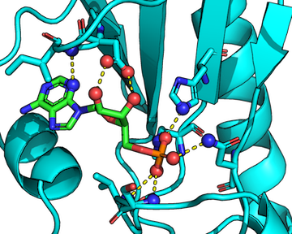
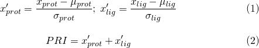

User Guide
The Protein Recognition Score software can be executed from the command line and takes an Hbind interaction table as input, which lists the hydrogen-bond interactions between a protein and its ligand.
The following example illustrates how to compute the PRI score for the 1KPF 1KPF complex (PKCI-substrate analog) with its ligand 1KPF_AMP.mol2 (adenosine monophsophate). The structures are provided in the "example_files/" subdirectory along with the generated Hbind interaction table.

[Interactions between an PKCI-substrate analog (1KPF) with its ligand (adenosine monophsophate) via HbindViz and PyMOL; hydrogen atoms not shown]
To compute the PRI score, simply invoke the following command in your terminal:
python code/pri-score.py example_files/hbind_output.txt
The resulting output is shown below:
Protein Recognition Index, version 1.0.0
Documentation: http://psa-lab.github.io/protein-recognition-index
Raschka, Wolf, Bemister-Buffington, Kuhn (2018)
Protein Structure and Analysis Lab, MSU (http://kuhnlab.bmb.msu.edu)
Protein PRI: 252
Ligand PRI: 1584
PRI: 0.039
The Protein PRI (PRI-prot) and Ligand PRI (PRI-lig) scores are computed based on the hydrogen bond statistics across 136 non-homologous protein-ligand complexes as described in
- Sebastian Raschka, Wolf A., Bemister-Buffington J., and Kuhn L.A. (2018) "Protein-ligand interfaces are polarized: Discovery of a strong trend for intermolecular hydrogen bonds to favor donors on the protein side with implications for predicting and designing ligand complexes." J. Computer-Aided Molec. Design [in revision]
The PRI is then computed by standardizing the Protein and Ligand PRI scores and adding these, respectively:

Here, μ (mean) and σ (standard deviation) were derived from the 136 PRI-lig and PRI-prot scores computed from the 136 non-homologous complexes. Hence, the range of the PRI score is [-2, 2], where higher scores are better.